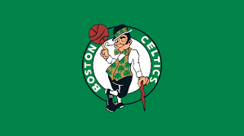

บอสตัน เซลติกส์ เป็นทีมบาสเกตบอลในลีกเอ็นบีเอ ในเมืองบอสตัน รัฐแมสซาชูเซตส์ เล่นอยู่ในดิวิชั่นแอตแลนติกในคอนเฟอเรนส์ตะวันออก บอสตัน เซลติกส์ เป็นทีมที่ได้แชมป์มากที่สุดคือ 17 สมัย ใช้สนามทีดีการ์เด้นเป็นสนามเหย้าร่วมกับทีมฮอกกี้น้ำแข็ง บอสตัน บรูนส์ ของลีกเอ็นเอชแอลปัจจุบันบอสตันเซลติกส์เป็นเพียงหนึ่งในสองทีมที่ยังคงเล่นอยู่ในเมืองเดิมตั้งแต่ก่อตั้งทีม (อีกทีมคือนิวยอร์ก นิกส์)